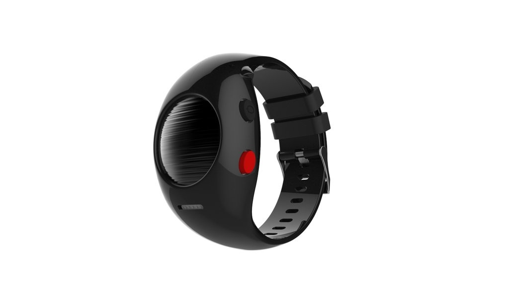
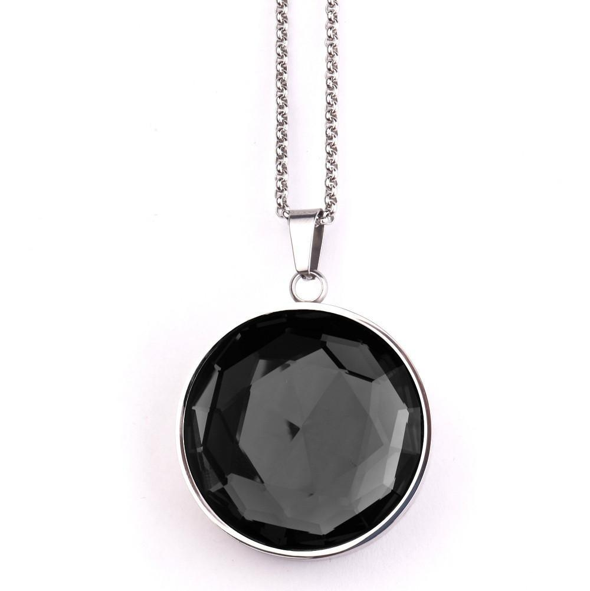
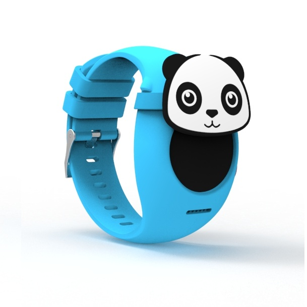

SAFER PRO

SAFER PRO es la solución integral para todas sus necesidades de seguridad personal.
- Puede recibir llamadas en su SAFER PRO y hablar con manos libres a gusto.
- Sus seres queridos pueden usar la aplicación SAFER PRO para ver su ubicación en vivo en momentos de angustia.
- Al presionar prolongadamente el botón rojo, puede enviar alertas de emergencia a sus seres queridos junto con su ubicación en vivo
- Las suyas o las de su pareja pueden hacer un seguimiento de su actividad física durante el día y obtener información sobre el mismo
- Sin cargos de suscripción. Batería de larga duración.
Colgante inteligente SAFER

Si usted o sus seres queridos se sienten inseguros y vulnerables cuando viajan solos, este colgante inteligente es ideal para usted
En caso de una emergencia, todo lo que tiene que hacer es presionar dos veces el botón en la parte posterior del colgante y enviará una alerta SOS a sus guardianes con su ubicación actual.
El último regalo para mantener seguros a tus seres queridos
Envía alertas SOS a los tutores con una doble pulsación.
Comparte ubicación en vivo con tus amigos
Navegue hasta el hospital o estación de policía más cercana.
Funciona con tecnología Bluetooth 4.0
Safer Kids

SAFER kids está diseñado para mantener a los niños seguros y conectados con los padres. Ideal para niños de 4 a 10 años, este es el reloj inteligente más lindo de todos los tiempos con rastreo de GPS y funcionalidad de llamada.
Los niños pueden llamar y recibir llamadas de 7 números preprogramados
Los padres pueden usar la aplicación SAFER para niños para ver la ubicación en vivo del niño. También pueden establecer "Zonas más seguras" en los mapas y recibir notificaciones cuando el niño ingrese o salga de esta zona.
Al mantener presionado el botón rojo, los niños pueden enviar alertas de emergencia a sus padres junto con su ubicación en vivo
Los padres pueden realizar un seguimiento de la actividad física del niño durante el día y obtener información sobre el mismo
Sin cargos de suscripción. Batería de larga duración.
Sobre nosotros

Leaf Wearables, un emprendimiento indio de los estudiantes de IIT Delhi y Delhi Technological University, fueron elegidos entre los 10 primeros emprendimientos innovadores en India por el Departamento de Ciencia y Tecnología que acompañó al primer ministro Narendra Modi en su visita a Silicon Valley para participar en Primer inicio de la India-EE. UU. Konnect (septiembre de 2015).
El dispositivo de seguridad inteligente se desarrolló bajo el proyecto 'Guardian', que ganó un premio a la innovación de Ericsson este año, lo que resultó en un producto completo y dio lugar al inicio de Leaf Innovation Pvt. Ltd en febrero de 2015. El producto, ahora conocido como SAFER, es un dispositivo de seguridad inteligente, que se puede utilizar para activar la alarma y enviar señales a números de teléfono previamente identificados en caso de emergencia. SAFER funciona con Bluetooth de baja energía y, por lo tanto, funciona en coordinación con la aplicación “SAFER by Leaf” en el teléfono inteligente del usuario. El dispositivo se puede utilizar como joyería inteligente en forma de collar; y está disponible en tres colores en www.leafwearables.com